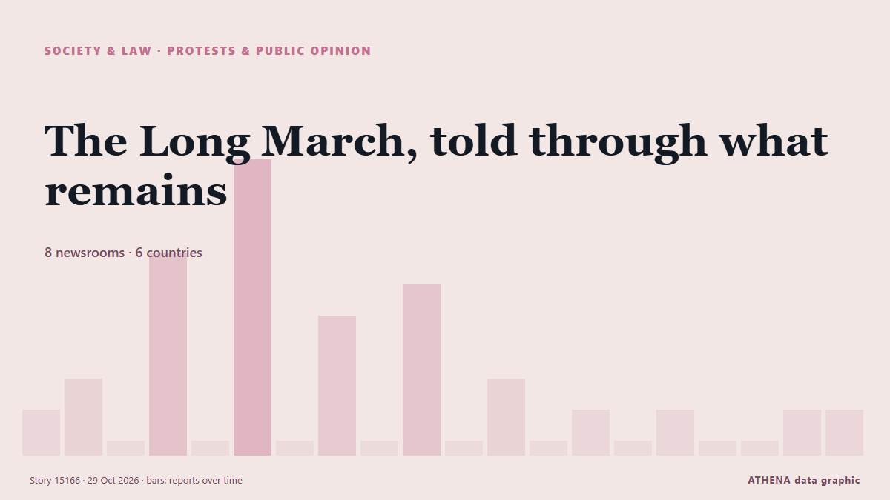

The Long March, told through what remains

A village's story of change: From the Long March to today. из CGTN (China)
Независимые источники: 8 изданий в 6 странах, с 19 окт.; первым сообщил People's Daily English — page reader; освещение идёт на спад. ATHENA не находит признаков риска в освещении. Уверенность — 83 % (высокая); подтверждают независимые источники: 8 изданий, средняя надёжность источников — 73 %. Кто сообщал: 24 СМИ в стране Китай · China, 2 СМИ в стране Иран · Iran, 2 СМИ в стране Южно-Африканская Республика · South Africa. Освещение шло с 19 окт. по 29 окт., 232 ч.
Почему это важно: Правовые и политические изменения меняют права, обязанности и государственные услуги для затронутых людей.
Что изменилось: 2 новых сообщений от 2 редакций за 24 часа до 29 окт..
Заголовки приводятся на английском языке, как они были опубликованы.
Коротко в цифрах
Отобрано, оценено и написано по опубликованной методологии ATHENA. Ни один редактор не вмешивается в отдельные события. Как это создаётся ›
| 19 Oct 15:52 UTC | 1 |
|---|---|
| 20 Oct 03:52 UTC | 2 |
| 20 Oct 15:52 UTC | 0 |
| 21 Oct 03:52 UTC | 6 |
| 21 Oct 15:52 UTC | 0 |
| 22 Oct 03:52 UTC | 9 |
| 22 Oct 15:52 UTC | 0 |
| 23 Oct 03:52 UTC | 4 |
| 23 Oct 15:52 UTC | 0 |
| 24 Oct 03:52 UTC | 5 |
| 24 Oct 15:52 UTC | 0 |
| 25 Oct 03:52 UTC | 2 |
| 25 Oct 15:52 UTC | 0 |
| 26 Oct 03:52 UTC | 1 |
| 26 Oct 15:52 UTC | 0 |
| 27 Oct 03:52 UTC | 1 |
| 27 Oct 15:52 UTC | 0 |
| 28 Oct 03:52 UTC | 0 |
| 28 Oct 15:52 UTC | 1 |
| 29 Oct 03:52 UTC | 1 |
Откуда эти цифры
Значимость
Риск
Уверенность
Освещение — кто сообщил и когда
заголовок в оригинале · открывает источник- People's Daily English — page reader · Китай · ChinaA high-speed railway traces the legacy of the Long March
- CGTN (China) · Китай · ChinaA village's story of change: From the Long March to today
- CGTN (China) · Китай · ChinaHow ethnic minorities helped the Red Army on the Long March？
- Jamaica Observer · Ямайка · JamaicaA long way to go
- CGTN (China) · Китай · ChinaChina protects Long March legacy with high-tech and patriotic classes
- CGTN (China) · Китай · ChinaThe Long March, told through what remains
- CGTN (China) · Китай · ChinaQ&A: How the Long March shapes the CPC and China's modernization today
- Mehr News (English) · Иран · IranEnduring Long March spirit boosts China rejuvenation drive
- CGTN (China) · Китай · ChinaA School Born of the Long March's Victory
- People's Daily English — page reader · Китай · ChinaChina's Long March legacy endures from trek to tech
- Xinhua (English) — page reader · Китай · China90 years on, China's Long March legacy still resonates
- Xinhua (English) — page reader · Китай · ChinaTwo bridges, 90 years apart: Long March spirit marches on
- Xinhua (English) — page reader · Китай · China"Everlasting" Long March a secret to China's development miracle: Armenian expert
- People's Daily English — page reader · Китай · ChinaLong March spirit sails on in China's modern navy
- CGTN (China) · Китай · ChinaA Long March of her own: Growing roses at Jiajin Mountain
- CGTN (World) · Китай · ChinaIf Long March veterans could write to us today…
- CGTN (China) · Китай · ChinaWhat does 'Half a Quilt' tell us about China's new Long March?
- People's Daily English — page reader · Китай · ChinaThrough the eyes of international friends: What Long March means today
- Antara (English) · Индонезия · IndonesiaTwo German writers retrace the Long March by bicycle
- CGTN (China) · Китай · ChinaInternational youths' reflections along a Long March route
- CGTN (China) · Китай · ChinaFrom Long March to Chinese modernization: China's new journey forward
- IOL · Южно-Африканская Республика · South AfricaXi Jinping calls for new achievements on new Long March
- IOL · Южно-Африканская Республика · South AfricaThe Long March at 90: A Legacy of Resilience and Determination
- KT Press · Руанда · RwandaThe Long March: How This Has Defined China and Rwanda Today
- Xinhua (English) — page reader · Китай · ChinaChina's Long March legacy through Turkish eyes
- Mehr News (English) · Иран · IranChina's Long March legacy through Turkish eyes
- Xinhua (English) — page reader · Китай · ChinaRetracing an odyssey: Why people walk China's Long March 90 years later
- CGTN (China) · Китай · ChinaDiplomats: this Long March exhibition is inspiring
- Xinhua (English) — page reader · Китай · ChinaMy Long March | Giving visitors more reasons to visit where it all began
- Xinhua (English) — page reader · Китай · ChinaMy Long March | Her English skills are opening doors for farmers
- People's Daily English — page reader · Китай · ChinaForge ahead on new Long March: Contributing more to human progress